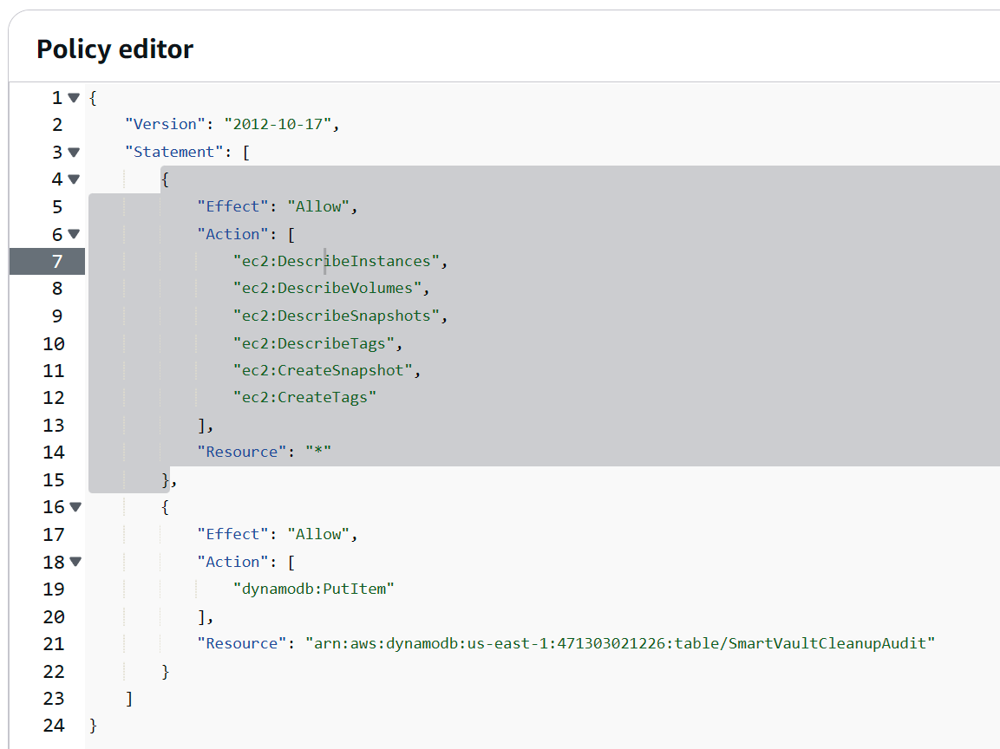

AWS - Smart Vault: Automated EBS Backup System with DynamoDB logging
Overview
My second project! This time I around I decided to create a Smart Vault - it's a serverless, tag-based backup automation system that creates and manages Amazon EBS snapshots for EC2 instances. It uses EventBridge to trigger AWS Lambda functions that:
- Create snapshots for tagged EC2 instances
- Store audit logs in DynamoDB
- Clean up expired snapshots based on customizable retention policies
The system is designed to minimize storage costs while providing traceable, automated protection for instance data.
Architecture
Core Components:
- EC2 + EBS: Instances are tagged with backup: true to be included in the backup cycle
- Lambda: Two functions handle snapshot creation and cleanup
- EventBridge: Triggers Lambda on a daily schedule
- DynamoDB: Stores audit logs for snapshot deletions
- CloudWatch Logs: Captures job activity and debug output
Diagram
+------------+ +---------------------+ +-------------------------+
| EC2 w/ Tag | --> | EventBridge Schedule| --> | Lambda: Create Snapshot |
+------------+ +---------------------+ +-------------------------+
|
v
+-------------+
| EBS Snapshot|
+-------------+
|
+----------------+ +----------------------+ |
| EventBridge | -> | Lambda: Cleanup |----------+
| (daily) | | Old Snapshots | |
+----------------+ +----------------------+ v
+------------------------+
| DynamoDB Audit Log |
+------------------------+
Features
- ✅ Tag-Based Control: Only instances tagged with
backup: trueare processed - ✅ Automated Scheduling: Runs daily with EventBridge rules
- ✅ Snapshot Tagging: Snapshots include
InstanceIdandCreatedBy: SmartVault - ✅ Audit Logging: Deletion records saved to DynamoDB
- ✅ Retention Policy: Configurable snapshot lifespan (default: 7 days)
- ✅ Serverless + Free Tier Friendly
Tech Stack
- AWS Lambda (Python) - Check out the Smart Vault backup function code here, and then the Auto Cleanup/DynamoDB Audit function here.
- Amazon EC2 / EBS
- Amazon EventBridge
- Amazon DynamoDB
- AWS IAM (least privilege)
- CloudWatch Logs
Screenshots





Future Improvements
- Notification system via SNS
- Web UI for audit log visualization
- Snapshot restore utility
- EC2 volume-to-S3 archival (long term)